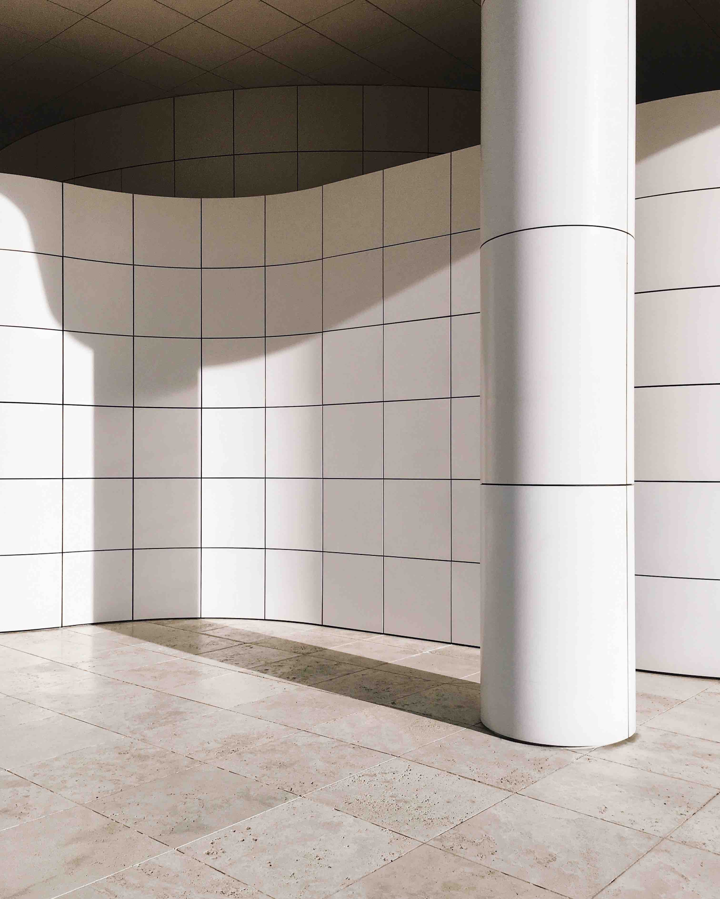
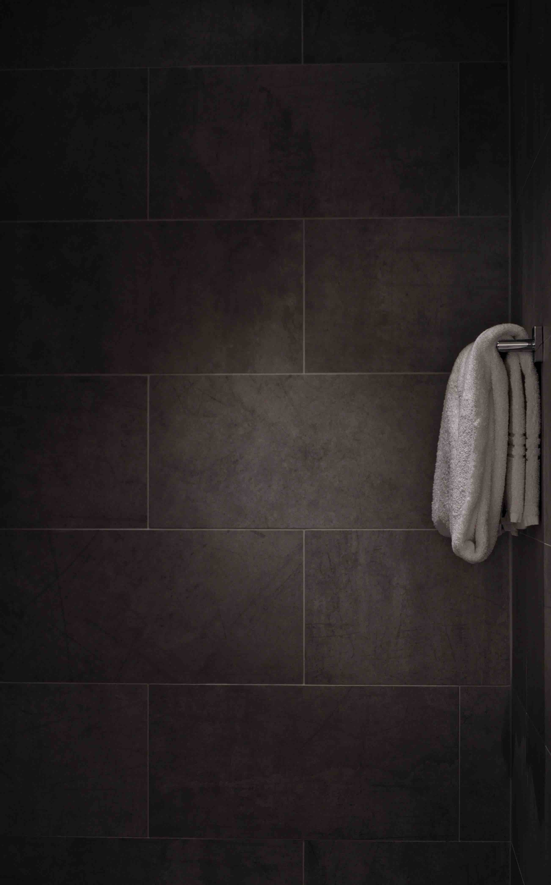

The Belgian Tile Centre
The Belgian Tile Centre (BTC) is the reference in ceramic (wall, floor and cladding) tiles and natural stone on the Benelux market. The BTC has a track record of close to 30 years in the delivery of high quality tiles and excellent customer service. TAK connections has recently entered into a strategic partnership with the BTC in order to bring you the best materials for your new building and/or renovation projects. We offer a customized solution - are you a reseller of tiles or someone with ideas for a private project ? We can help . . . In addition to the best tiles, we also make arrangements for all formalities related to export from the EU. In case you have questions or wish to get a quick quote, send an e-mail to sales@takconnections.com or call +32 xxx xx xx xx.
Wall and Cladding Tiles
 We can supply black, grey, white or brown coloured tiles.
Dimensions - 45 cm x 45 cm, 60 cm x 60 cm, 90 cm x 90 cm.
Bathroom Tiles
 We can supply black, grey, white or brown coloured tiles.
Dimensions - 15 cm x 15 cm, 20 cm x 30 cm, 30 cm x 30 cm etc.
In recent years, we have noticed a massive influx of low quality i.e. cheap tiles into markets in Central and Western African countries. While these tiles are affordable, they are often poor copies of the authentic tiles designed by renowned brands. Would you compromise on quality for a lower price? We will leave you be the judge, make up your own mind.
At TAK connections we work with people for whom quality is a way of life. Our customers are very demanding and we do our best to satisfy them. We take care of all custom formalities related to the purchase and export of your order from the EU. Contact us if you have any questions about our service.